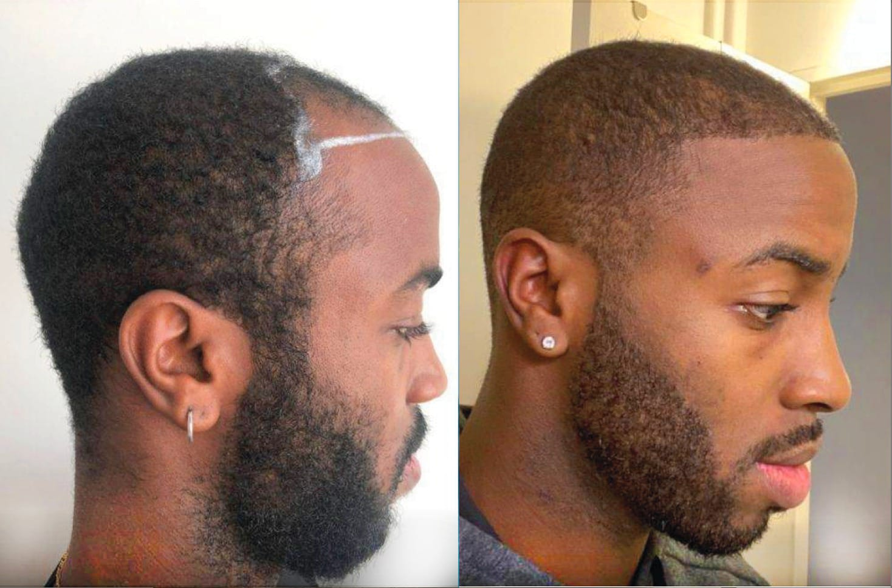

Instantly After

Before Procedure

High-Density Frontal Placement
Detailed view of Sapphire FUE graft distribution. Notice the clean, rhythmic placement which ensures natural-looking density once matured.
Minutes After

Before Procedure

Technical Graft Engineering
Surgical view of the recipient area. Our Turkish specialists focus on angle precision to match the natural growth pattern of your hair.